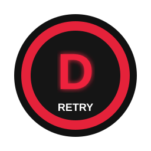
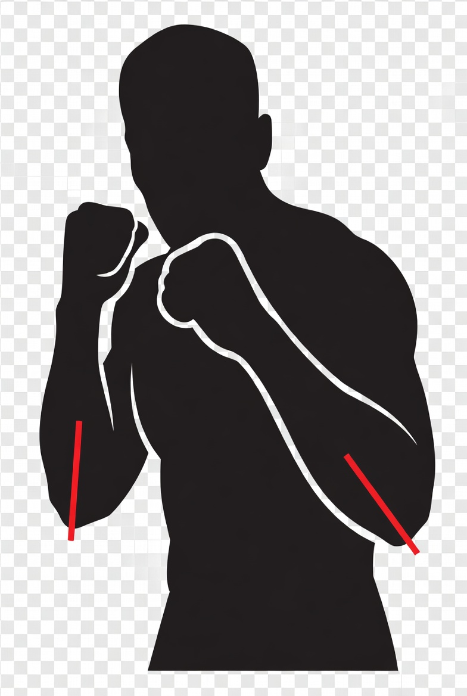
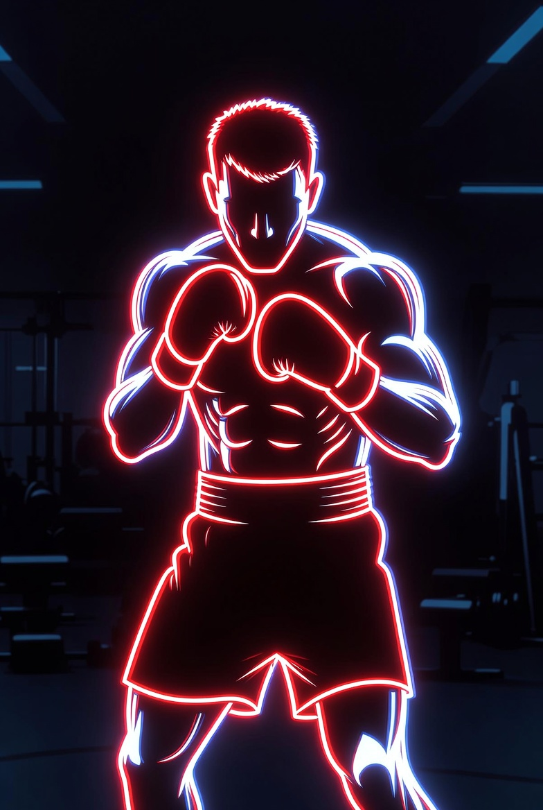

훈련 시간
세션 03:00
SCORE

0
ACCURACY
—
HP
100%
COMBO
0x
내 자세
카메라 대기 중

카메라가 연결되지 않았습니다
시작하기를 누르면 카메라 권한을 요청합니다
참고 영상
COACH MESSAGE
훈련이 시작되면 코치 메시지가 표시됩니다.
FEEDBACK
- 아직 피드백이 없습니다. 훈련을 시작하면 동작 분석 결과가 기록됩니다.
기본 가드 따라하기
손은 광대 높이, 턱은 살짝 당기고, 무게중심은 낮게 유지하세요.
- 양손을 눈높이 근처에 둡니다.
- 어깨 힘을 빼고 턱을 내립니다.
- 발은 어깨 너비 정도로 두고 중심을 낮춥니다.

시작하기 버튼을 눌러 훈련을 시작하세요.
DEV: 디버그 정보
- originunknown
- lessonbasic-guard
- threshold--
- snapshot대기 중
{
"note": "훈련이 시작되면 threshold와 lastPoseSnapshot이 표시됩니다."
}